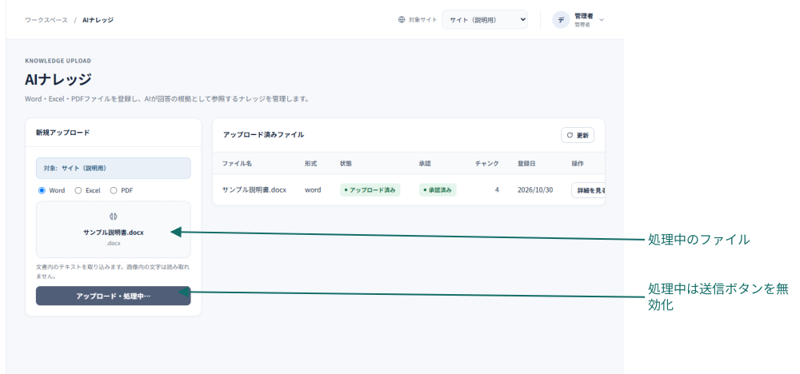
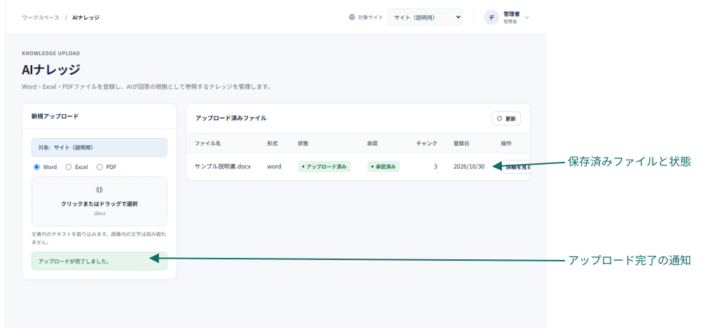
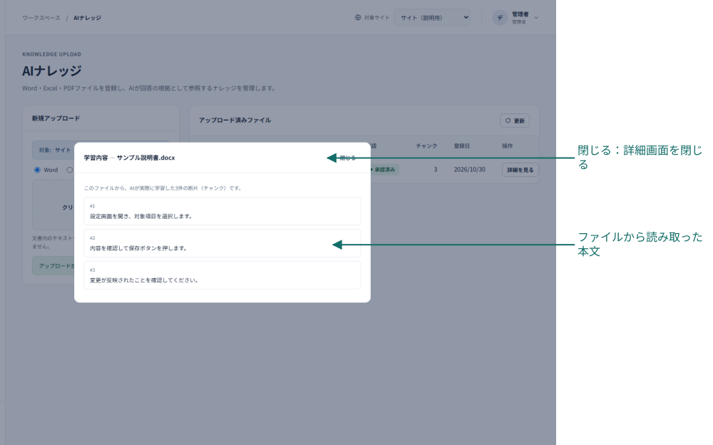

資料を選択
サイトを選択 → Word / Excel / PDF → ファイルを選択 → アップロードする。

処理中
アップロードする → アップロード・処理中… → 本文を読み取る → 文章を分割 → ベクトルを作成 → DBに保存。

検索に使うための準備処理であり、この時点では訪問者への回答を作成しない。
アップロード完了
アップロードが完了しました。 → 選択したファイルを解除 → 右側の一覧を更新。

管理者がアップロード → 承認済み。スタッフがアップロード → 承認待ち。失敗時 → エラーを表示し、再送信できるよう選択ファイルを保持。
取り込んだ本文を確認
詳細を見る → 本文の一覧を開く → 閉じる → ファイル一覧に戻る。

詳細表示ではAIを呼び出さず、資料の内容も変更しない。